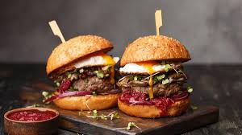

Hamburguer

Description
A hamburger is a sandwich consisting of a cooked meat patty on a bun or roll. You can order a hamburger, fries, and a shake at most fast food restaurants. Hamburgers are traditionally made with ground beef and served with onions, tomatoes, lettuce, ketchup, and other garnishes.
Ingredients
- 2 pieces white sandwhich bread, crusts removed and cut into ¼-inch piecs
- ⅓ cup milk
- 2½ teaspoons kosher salt
- 1 teanspoon freshly ground black pepper
- 3 garlic cloves, minced
- 1½ tablespoons Worcestershire sauce
- 2 tablespoons ketchup
- 3 pounds 80 to 85% lean ground beef
- 3 scallions, white and green parts, very finely sliced (optional)
- 8 hamburguer buns
Steps
- Preheat the grill to high heat
- Mash the bread and milk together
- Add the ground beef and scallions
- Mix everything together until evenly combined
- Divide the mixture into 8 equal portions and form compact balls
- Flatten the balls into ¾-inch patties about 4½ inches across
- Form a slight depression in the center of each patty to prevent the burgers from puffing up on the grill
- Oil the grilling grates
- Grill the burgers, covered, until nicely browned on the first side, 2 to 4 minutes
- Flip burgers and continue cooking for a few minutes more
- Before serving, toast the buns on the cooler side of the grill if desired